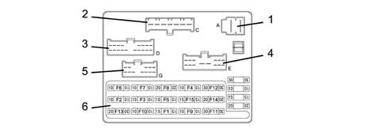
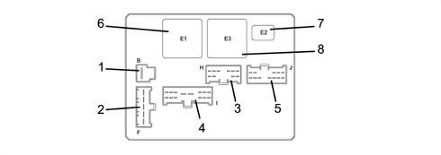
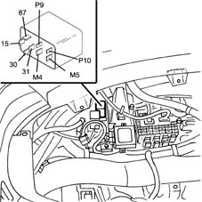
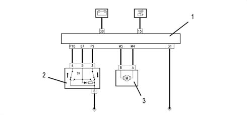
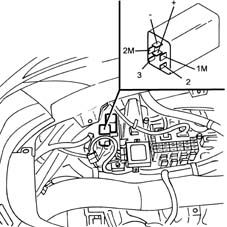
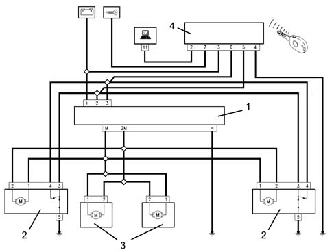

Introduction - ELECTRICAL CIRCUIT FOR INSTRUMENTS/INDICATORS
- Path
- Descriptions > 55 ELECTRICAL EQUIPMENT > 5505 ELECTRICAL CIRCUIT FOR INSTRUMENTS/INDICATORS > Introduction - ELECTRICAL CIRCUIT FOR INSTRUMENTS/INDICATORS
- Kind
- system description
- Applies to
- all engines; all production periods
- Interactive page
- https://sloeber94.github.io/elrnDB-fMltpl/en/#/2892450
Applies to: all engines; all production periods
The entire electrical system has been designed and constructed in accordance with the most up-to-date guidelines concerning safety and protection, especially against fire risks.
There are two main kinds of protection:
- active protection, aimed at reducing possible causes of faults "at source";
- passive protection, aimed at minimizing the effects of a possible fault.
The first kind involves the thoughtful design of wiring, attentive to location and anchorage, and the careful definition of properly protected cable routes.
Modifications have therefore been made to the alternator and starter motor cables, with the adoption of protective caps, etc.
Passive protection instead includes all the interventions, which have always been adopted on vehicles, to reduce high fault currents (overload and short circuit).
All the fuses included in the system have been rated on the basis of the nominal absorption of the loads which cannot be served simultaneously, and so as to ensure intervention in the case of a definite short circuit.
The main supply lines are protected by "maxifuses", grouped near the battery and supplied directly by the latter. The MAXIFUSES protect the system in the case of a short circuit, and also in the case of high temperatures (start of fires, etc.).
The supplies of all the services and systems are protected by suitable fuses, grouped in the junction unit located in the driver's glove compartment, or by bridge fuses located near the junction unit.
Thus all the supplies are protected, with the sole exception of the starter motor cable (battery-motor) and recharging cable (motor-alternator): these cables have a special friction-resistant coating (cross-linked polyethylene) and are located in protected areas. In addition, the attachments comprise anti-rotation plates to prevenet their movement.
All the car's wiring looms are protected by corrugated or padded pipes to increase their protection and reduce any noise (squeaking, etc.).
Several wiring looms are "prewired"., i.e. mounted directly on a unit, so that they can easily be separated (engine, radiator, air conditioner).
Junction unit
This is located in the driver's glove compartment and is protected by a removable flap.
Front view
-

1, connector A (front wiring) 2, connector C (front wiring) 3, connector D (front wiring) 4, connector E (rear wiring) 5, connector G (rear wiring) 6, Fuses
Rear view
-

1, connector B (dashboard wiring) 2, connector F (dashboard wiring) 3, connector H (dashboard wiring) 4, connector I (dashboard wiring) 5, connector J (dashboard wiring) 6, relay R1 (loads excluded on starting) 7, relay R2 (horn) 8, relay R3 (heated rear window)
Fuses
The fuses are located on the front of the junction unit.
The circuits protected by the individual fuses are as follows:
- F1 , instrument; stop lights control; direction indicators/hazard lights; remote control receiver; alarm; ABS; Air Bag; reversing lights; park sensor; radio; cellular 'phone; clutch pedal switch (validity 1910 JTD )
F2 , front left side lights, right number plate light, rear left lights; cigar lighter light; radio; navigator;
-F3 , front right side lights, left number plate light, right rear lights; climate control lighting;
- F4 , left dipped beam;
-F5 , right dipped beam; headlamp adjuster;
- F6 , right main beam;
- F7 , left main beam;
-F8 , stalk unit supply, electric front windows, electric rear windows; sunroof, navigator;
- F9 , direction indicators / hazard lights
- F10,instrument; interior lighting; boot light; radio; sunshade light; alarm; remote control receiver; cellular 'phone; diagnostic connector;
-F11 , rear window and rearview mirror demister;
-F12 , car interior fan;
- F13 , horns;
-F14 , windscreen wash/wipe; headlamp washer; rear window wash/wipe;
- F15 , cigar lighter; air conditioner compressor;
Electric windows control unit
The driver's electric window is operated automatically, depending on how the relevant switch is pressed.
- the operation is manual (the glass goes up/down only when the button is pressed) when the button is held down for 60 to 300 milliseconds;
- the operation is instead automatic (the glass continues to go up/down to the end of travel, even if the button is released) when the button is held down for over 300 milliseconds;
- if the button is pressed again during movement of the glass, the glass is stopped instantly;
- if the button is pressed for less than 60 milliseconds, it is ignored (it is considered to have been knocked accidentally).
The passenger's window is operated manually (the glass only goes up/down when the button is pressed). Both windows can only be operated when the ignition is on.
The control software for the driver's window is located in the specific control unit, located in the driver's glove compartment, as shown in the figure

The control unit also carries out a series of safety checks:
- the stopping of the electric windows (switching off the electric supply to the motor) is determined when the glass reaches the end of travel at top or bottom, or if an obstacle blocks the glass. This is regulated by checking the motor current;
- if there are faults on the electrical circuits, the control unit switches the system off temporarily (for example if the motor control signals are interrupted or if the absorbed current is below the usual values);
- if there is a fault in the control buttons (short circuit, or buttons jammed in the pressed position), the control unit switches the system off temporarily
Control unit pin-out
Pin, Signal
15, supplied controlled by the ignition
30, direct supply
31, power earth
87, button supply
P9, control signal from buttons
P10, control signal from buttons
M4, motor operation
M5, motor operation
The following figure shows diagrammatically the central door locking control unit connections:

1, control unit 2, control button 3, motor
Central door locking control unit
The lock motors on all the doors are activated simultaneously upon a command:
- by the key;
- from the front door switches (knobs);
- from the remote control (if present)
Locking operation: when the key is used on one of the two front doors or the remote control is operated when the doors are firmly shut and the front locks locked, all four doors are locked simultaneously
Unlocking operation: when the key is used on one of the two front doors, with front locks locked, or the remote control is operated, all four doors are unlocked.
The control software is controlled by the specific control unit, located in the driver's glove compartment, as shown in the figure

The control unit also carries out a series of safety checks:
- the control unit checks the actual status of the locks: the "lock" or "unlock" command is only executed with the doors properly closed: if the door being operated is not shut properly, the command is inhibited; if the door opposite that being operated is not shut properly, and an immediate "repulsion" is carried out (i.e. the opposite action is carried out to "realign" the locks).
- if there is a rapid succession of alternating lock/unlock commands, the control unit only carries out the first three commands without activating the inhibition. Similarly if 8/9 opening and closing actions are carried out in 20 seconds (the last is always a closure), the circuit is then inhibited for about 30 s.
- the circuit can be further inhibited if the battery voltage falls below 9 V within 20 ms. from the start of activation of the lock/unlock actions. During the inhibition time (30 s), the commands are ignored.
Control unit pin-out
Pin, Signal
+, supply under direct control
-, power earth
1M, lock motor lock/unlock command
2M, lock motor lock/unlock command
2, lock/unlock signal from key or remote control
3, lock/unlock signal from key or remote control
The following figure shows diagrammatically the central door locking control unit connections:

1, control unit 2, front door lock 3, rear door lock 4, remote control receiver